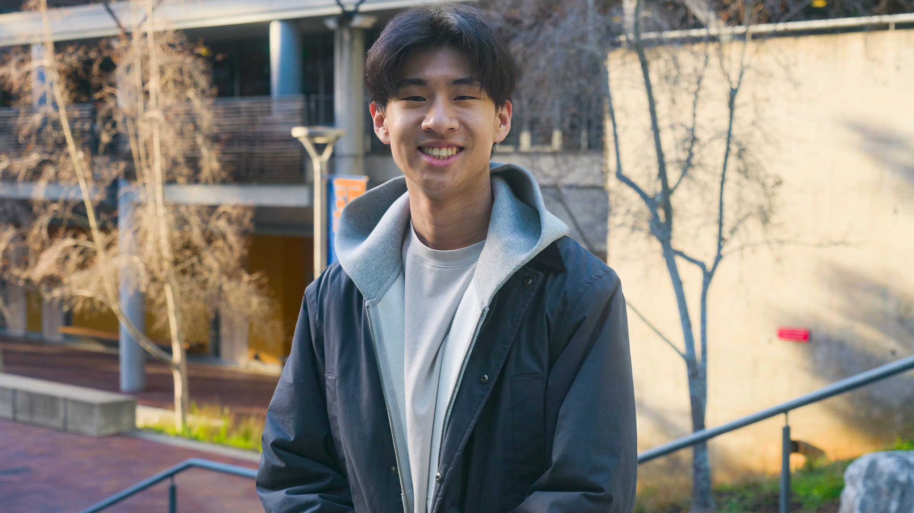
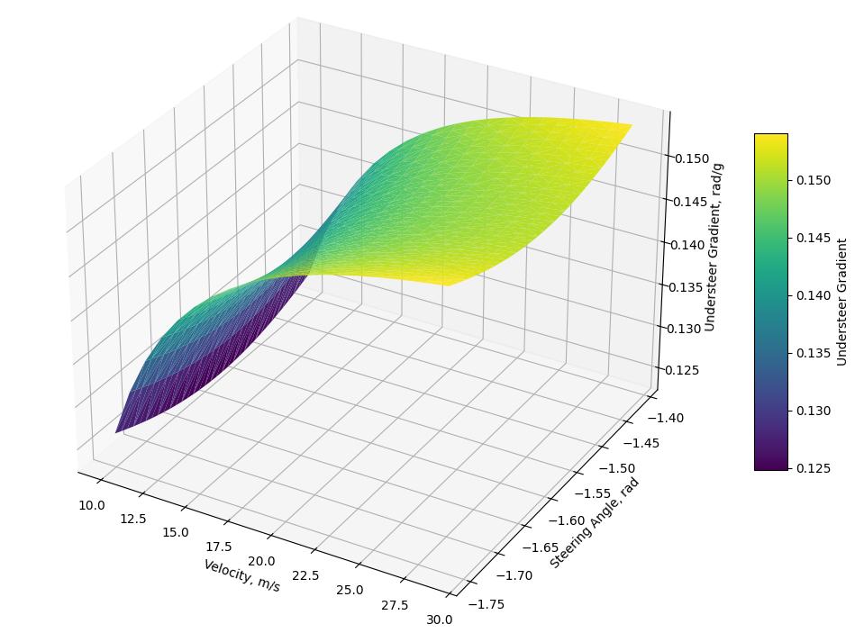
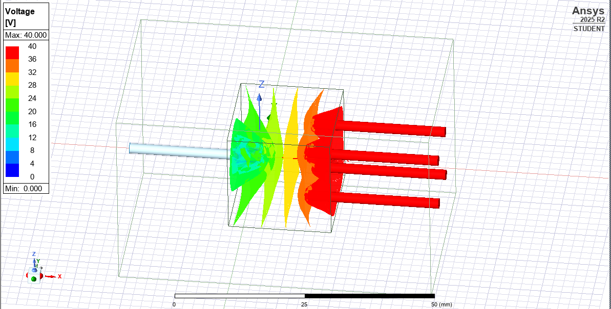
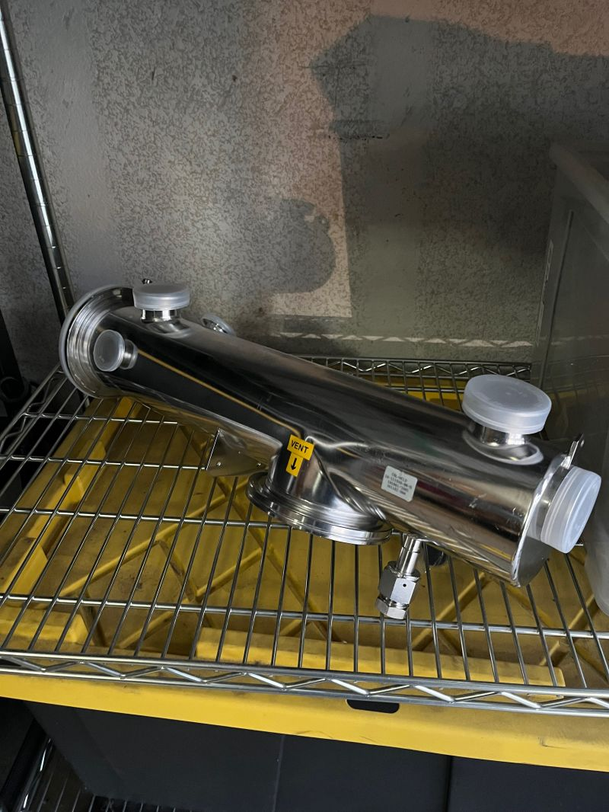
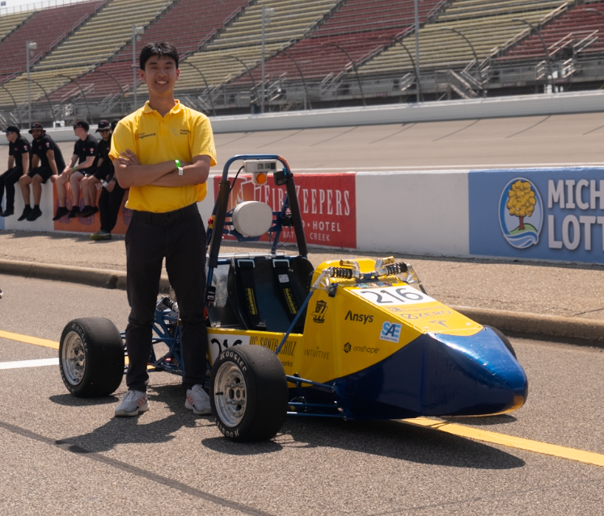
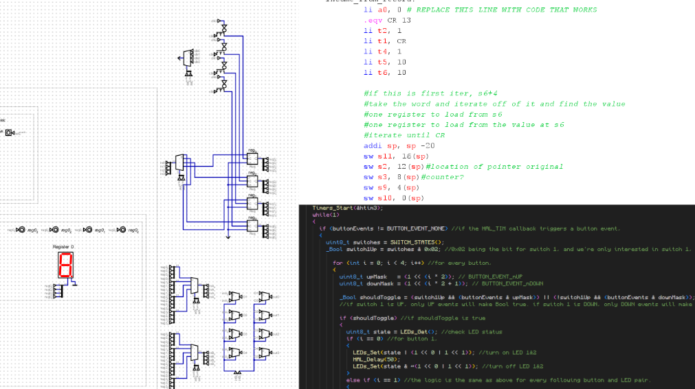
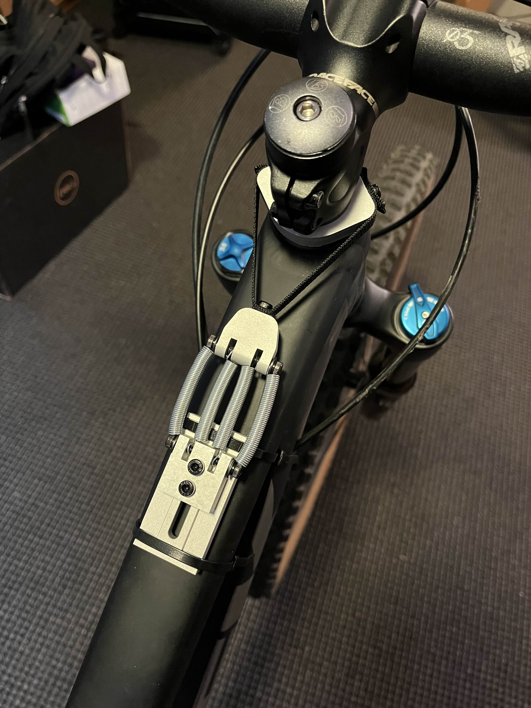
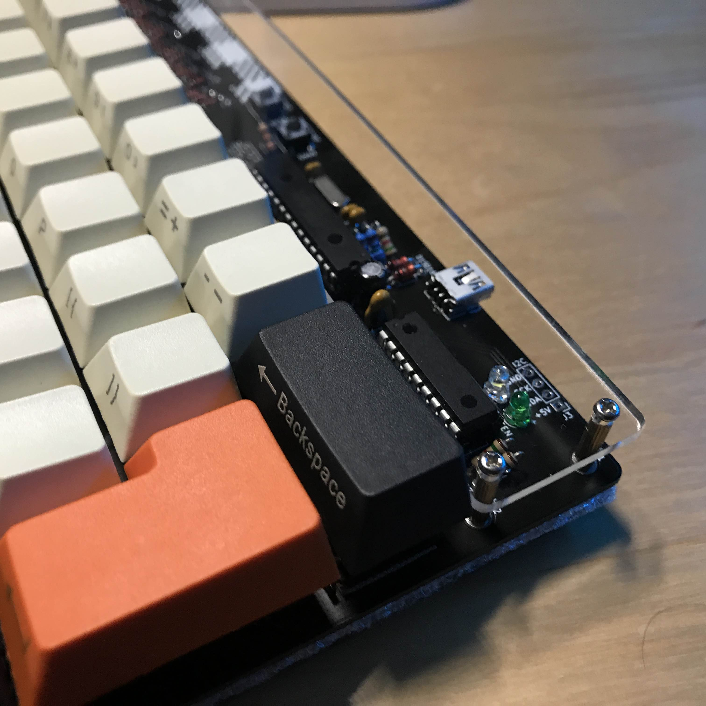
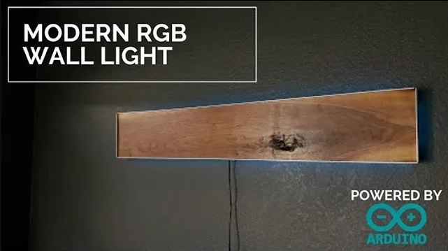

Electrical Engineering · UC Santa Cruz
Hello, World! I'm Caleb, an electrical engineering student minoring in physics. I see engineering through the eyes of a physicist, and searching for creative answers in both the well-understood and highly unknown is my passion. I'm interested in many fields, which you will see in the work I've done.

Documented Projects

A collection of multi-DOF physics and geometry simulations of suspension/steering kinematics, tire forces, and high-level vehicle handling.
Click to expand →
FEA and CFD modelling of a laser-assisted, ultra-high current density electrolysis system at the NECTAR Lab in UCSC.
Click to expand →
An independent research initiative fueled by a fascination of high-energy plasma physics.
Click to expand →
Creating the identity of the FS-3 racecar with the body panels I manufactured.
Click to expand →
A synopsis of electrical engineering-relevant skills I've picked up and things I've learned from project-based classes.
Click to expand →
A modular bicycle steering stabilizer based on Jo Klieber's work. It counteracts the "wheel flop" effect [somewhat similar to self-centering force in the automotive realm], reducing rider fatigue and increasing stability by reducing large-amplitude vibrations.
Click to expand →
A custom keyboard, down to the resistors, diodes, and capacitors.
Click to expand →
A completely overkill science project I made during COVID lockdown.
Click to expand →Capabilities
Simulation & Analysis
Programming
CAD & Design
Lab & Fabrication
Get In Touch
I'm currently seeking internship and lab positions for Summer 2026 in applied physics (namely in energy generation), automotive engineering, and scientific computing. I am also interested in UCSC-affiliated ECE, MSE, or physics lab positions. Please reach out with any inquiries or opportunities!